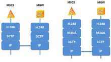

SCTP（Stream Control Transmission Protocol，流量控制传输协议）是IETF（Internet Engineering Task Force，因特网工程任务组）在2000年定义的一个传输层（Transport Layer）协议，是提供基于不可靠传输业务的协议之上的可靠的数据报传输协议。SCTP的设计用于通过IP网传输SCN（Signaling Communication Network，信令通信网）窄带信令消息。后期广泛用于EPC网络中的S6a/S1/Sgs/Sv等接口中。
- 中文名
- 流控制传输协议
- 外文名
- Stream Control Transmission Protocol
- 特 点
- 支持多流和多宿
SCTP背景知识
编辑SCTP协议是众多网络通信协议中的一种，为更好的理解SCTP协议，我们先来介绍协议栈的概念。
协议栈是指网络中各层协议的总和，它形象的反映了网络中消息的传输过程：即由上层应用协议到底层协议，再由底层传输协议到上层协议。
例如MSCS（Mobile Switching Center Server，移动交换中心服务器）与MGW（Media GateWay，媒体网关）网元之间是由H.248协议进行控制的，它通过SCTP协议进行消息的传输，这两个网元接口上的协议栈有两种情形，如图1所示。

图1 MSCS和MGW网元的接口协议栈示例
具体来说，MSCS网元发送的H.248消息向下经过SCTP的处理，增加了消息头、本端地址、对端地址等信息，经过IP传输到对方，对端收到之后，则像剥洋葱一样一层一层的剥开，最终解出H.248消息交给MGW网元上层应用进行处理。
SCTP简介
编辑SCTP是一个面向连接的流传输协议，它可以在两个端点之间提供稳定、有序的数据传递服务。SCTP可以看做是TCP协议的改进，它继承了TCP较为完善的拥塞控制并改进TCP的一些不足之处：
l SCTP与TCP的最大不同之处在于它是多宿主（Multi-homing）连接，而TCP是单地址连接。
l 一个TCP连接只能支持一个流，一个SCTP连接可以支持多个流（Multi-streaming）。在SCTP协议中，流（Stream）是指从一个SCTP端点到另一端点之间建立的单向逻辑通路，通常情况下所有用户消息在流中按序传递。
l SCTP有更好的安全性。
SCTP实际上是一个面向连接的协议，但SCTP偶联的概念要比TCP的连接具有更广的概念，SCTP对TCP的缺陷进行了一些完善，使得信令传输具有更高的可靠性，SCTP的设计包括适当的拥塞控制、防止泛滥和伪装攻击、更优的实时性能和多归属性支持。
SCTP最初是被设计用于在IP上传输电话，把SS7（Signaling System No. 7，七号信令系统）信令网络的一些可靠特性引入IP。IETF的这方面的工作称为信令传输SIGTRAN。与此期间，也提出了这个协议的其他一些用途。
SCTP提供如下服务：
l 确认用户数据的无错误和无复制传输；
l 数据分段以符合发现路径最大传输单元的大小；
l 在多数据流中用户信息的有序发送，带有一个选项，用户信息可以按到达顺序发送；
l 选择性的将多个用户信息绑定到单个SCTP包；
l 通过关联的一个终端或两个终端多重宿主支持来为网络故障规定容度。
SCTP应用
编辑移动通信网络中，SCTP协议在IP承载连接的情况下广泛得到应用，网络示意图中多条网元连接均有SCTP协议的运用，如图2所示。
 图2 SCTP协议应用示例图
图2 SCTP协议应用示例图
l RNS（Radio Network Subsystem，无线网络子系统）与MSCS之间：如果采用M3UA（MTP3-User Adaptation layer protocol，MTP第三层的用户适配层协议），协议栈为IP/SCTP/M3UA/SCCP/RANAP；
l MGW与MSCS之间，如果采用M3UA，协议栈为IP/SCTP/M3UA/H.248，同时H.248也可以直接承载在SCTP之上；
l HLR（Home Location Register，归属位置寄存器）与MSCS/VLR之间，如果采用M3UA，协议栈为IP/SCTP/M3UA/SCCP/TCAP/MAP；
SCTP关系
编辑作为一个传输层协议，SCTP兼有TCP及UDP两者的特点。SCTP可以称为是TCP的改进协议，但它们之间仍然存在着较大的差别。
l 首先SCTP和TCP之间的最大区别是SCTP的连接可以是多宿主连接的，TCP则一般是单地址连接的。在进行SCTP建立连接时，双方均可声明若干IP地址（IPv4，IPv6或主机名）通知对方本端所有的地址。若当前连接失效，则可切换到另一个地址，而不需要重新建立连接。
l 其次SCTP是基于消息流，而TCP则是基于字节流。所谓基于消息流，是指发送数据和应答数据的最小单位是消息包（chunk）。一个SCTP连接（Association）同时可以支持多个流（stream），每个流包含一系列用户所需的消息数据（chunk）。而TCP则只能支持一个流。
l 在网络安全方面，SCTP增加了防止恶意攻击的措施。不同于TCP连接采用的三次握手机制，SCTP连接采用四次握手机制，有效的防止了类似于SYN Flooding的防范拒绝服务攻击。SCTP主要的贡献是对多重联外线路的支持，一个端点可以由多于一个IP地址组成，使得传输可在主机间或网卡间做到透明的网络容错备援。
SCTPSCTP包结构
编辑
一个数据SCTP包首部可跟一个或多个可变长的块。块采用TLV（Type/Length/Value，类型/长度/值）的格式。
源端口、目的端口、校验码的意义同TCP中的意义相似。确认标签保存着在SCTP握手中第一次交换的初始标签的值。在关联中，任何SCTP数据包若不包含这样一个标签，当到达时会被接收端丢弃。
在每个块中，TLV包括块类型、传输处理标记、块长度。不同的块类型可用来传输控制信息或数据。
TSN（Transmission Sequence Number，传输顺序号）和SSN（Stream Sequence Number，流顺序号）是两种不同的序列号，TSN保证整个关联的可靠性，而SSN保证整个流的有序性，这样，在传输中，将数据的可靠性与有序性独立分开。
SCTPSCTP数据交换
编辑在两个SCTP主机间的正常数据交换。SCTP主机发送SACK（Selective Acknowledgement，选择性确认）块，用来确认每一个收到的SCTP包。因为SACK能完整地描述接收端的状态，因此，依据SACK，发送端能做出重传判决。SCTP支持类似于TCP中的快速重传和time-out重传算法。
对于数据包丢失发现，SCTP和TCP采用截然不同的机制：当TCP发现接收序号有缺口时，会等到该缺口被填上后，才发送序列号高于丢失数据包的数据。然而，SCTP即使发现接收序号有缺口或顺序错乱，仍会发送后面的数据。
SCTPSCTP关闭关联
编辑作为面向连接的传输协议，SCTP也运用三路握手来关闭一个关联，但与TCP有一点不同：一个TCP终端在“关联关闭”的过程中能够保持连接开启，并从对端接收新的数据，而SCTP不支持TCP的这种“半关闭”状态。
1．主机A发出“关闭”（SHUTDOWN）块来终止与主机B的关联，主机A进入“SHUTDOWN-PENDING”状态，对应的动作是：不再接受上层应用的数据，只发送队列中剩余的数据，进入“SHUTDOWN-SENT”状态。
2．主机B一旦接收到“关闭”块，就进入“SHUTDOWN-RECEIVED”状态，同主机A一样，不再接受上层应用的数据，只发送队列中剩余的数据。
3．主机A再次发送“关闭”块，通知主机B所发送的剩余数据已到达，并且重申了关联正在关闭。
4．当第二次收到“关闭”块时，主机B发送“确认关闭”块。
5．主机A随后发送“关闭结束”块，完成本次关联的关闭。
SCTP特性
编辑多宿主
多宿主为应用程序提供了比TCP更高的可用性。多宿主主机就是一台具有多个网络接口的主机，因此可以通过多个IP地址来访问这台主机。在TCP中，连接（connection）是指两个端点之间的一个通道（在这种情况下，就是两台主机的网络接口之间的一个套接字）。SCTP引入了联合（association）的概念，它也是存在于两台主机之间，但可以使用每台主机上的多个接口进行协作。图2阐述了TCP连接与SCTP联合之间的区别。

图2TCP连接与SCTP联合
该图的上面部分是TCP连接，每个主机都只包含一个网络接口；连接是在每个客户机和服务器之间的单个接口之间建立的。在建立连接时，就被绑定到了每个接口上。在该图的下面部分中，您可以看到这样一个架构：每台主机上都包含两个网络接口。通过独立网络提供了两条路径，一条是从接口C0到S0，另外一条是从接口C1到S1。在SCTP中，这两条路径可以合并到一个联合中。
SCTP负责使用内嵌的heartbeat机制来监视联合的路径；在检测到一条路径失效时，协议就会通过另外一条路径来发送通信数据。应用程序甚至都不必知道发生了故障恢复。故障转移也可以用于维护网络应用程序的连通性。例如，让我们来考虑一台包含一个无线802.11接口和一个以太网接口的笔记本的例子。当笔记本放到固定的位置上时，我们倾向于使用高速的以太网接口（在SCTP中称为主地址（primaryaddress））；但是在这个连接丢失时（例如离开了固定位置），连接可迁移到无线接口上。在返回固定位置时，以太网连接会被重新检测到，通信就可以在这个接口上恢复。这是一种能提供更高的可用性和可靠性的强大机制。
多流
从某种意义上来讲，SCTP连接与TCP连接类似，不同之处只是SCTP能够在一个联合中支持多流机制。一个联合中的所有流都是独立的，但均与该联合相关（参见图3）。

图3.SCTP联合与流之间的关系
每个流都给定了一个流编号，它被编码到SCTP报文中，通过联合在网络上传送。多流非常重要，因为阻塞的流（例如等待重传的流会导致报文的丢失）不会影响同一联合中的其他流。这个问题统称为head-of-lineblocking（对头阻塞）。TCP很容易出现这类阻塞问题。
多流如何在传输数据时提供更好的响应性呢？例如，HTTP协议会在相同套接字上共享控制和数据。Web客户机从服务器上请求一个文件，服务器通过相同的连接将这个文件发回给客户机。多流的HTTP服务器可以提供更好的交互能力，因为在联合中各单独的流上可以处理多个请求。这种功能可以并行化响应，尽管速度不一定会更快，但可以同时加载HTML和图像映像，从而表现出更好的响应性。
多流处理是SCTP的一个重要特性，尤其是在协议的设计中考虑一些控制和数据的问题时更是如此。在TCP中，控制和数据通常都是通过相同的连接进行共享的，这可能会产生问题，因为控制报文可能会在数据报之后延时。如果控制和数据被划分成单独的流，控制数据就可以以一种更及时的方式进行处理，从而可以更好地利用可用资源。
初始化保护
TCP和SCTP中对新连接的初始化是通过报文握手来完成的。在TCP中，这种机制称为三次握手（three-wayhandshake）。客户机向服务器首先发送一个SYN报文（Synchronize的简写），服务器使用一个SYN-ACK报文进行响应（Synchronize-Acknowledge）。最后，客户机使用一个ACK报文确认已接收到报文（请参见图4）。

图4.TCP和STCP握手使用的报文交换
当恶意客户机使用虚假的源地址来伪造一个IP报文时，TCP就会出现问题了，这会大量TCPSYN报文攻击服务器。服务器在接收SYN报文之前，要为连接分配资源，但是在大量产生SYN报文的情况下，最终会耗尽自己的资源，从而无法处理新的请求。这种情况就称为服务拒绝（DenialofService）（DoS）攻击。
SCTP可以通过一种4次握手的机制并引入cookie的概念来有效地防止这种攻击的产生。在SCTP中，客户机使用一个INIT报文发起一个连接。服务器使用一个INIT-ACK报文进行响应，其中就包括了cookie（标识这个连接的惟一上下文）。客户机然后就使用一个COOKIE-ECHO报文进行响应，其中包含了服务器所发送的cookie。服务器要为这个连接分配资源，并通过向客户机发送一个COOKIE-ACK报文对其进行响应。
要解决使用这种4次握手机制解决延时数据移动的问题，SCTP允许把数据包含到COOKIE-ECHO和COOKIE-ACK报文中。
消息分帧
使用消息分帧机制，就可以保护消息只在一个边界内通过socket进行通信；这意味着如果客户机向服务器先发送100个字节，然后又发送50个字节。那么服务器就会在两次读取操作中分别读取到100个字节和50个字节。UDP也是这样进行操作，这对于面向消息的协议非常有益。
与此不同，TCP是按照字节流的方式进行操作。如果没有分帧机制，一端接收到的数据可能比另外一端发送的数据多或少（这会将一次写操作划分成多次操作，或者将多次写操作合并到一个读操作中）。这种行为需要在TCP之上进行操作的面向消息的协议可以在应用层中提供数据缓冲和消息分帧机制（这可能是一项复杂的任务）。
SCTP在数据传输中提供了消息分帧功能。当一端对一个套接字执行写操作时，可确保对等端读出的数据大小与此相同（请参见图5）。对于面向流的数据来说，例如音频和视频数据，可以没有分帧机制。

图5.UDP/SCTP中的消息分帧与面向字节流协议的比较
可配置的无序发送
SCTP中的消息的传输十分可靠，但未必是按照想要的次序来传输的。TCP可以确保数据是按照次序发送的（考虑到TCP是一种流协议，这是一件好事）。UDP无法确保有序地发送数据。但是如果需要，您也可以在SCTP中配置流来接受无序的消息。这种特性在面向消息的协议中可能非常有用，因为其中的消息都是独立的，次序并不重要。另外，您可以在一个联合中按照逐个流配置无序发送。
平滑关闭
TCP和SCTP都是基于连接的协议，而UDP则是一种无连接的协议。TCP和SCTP都需要在对等的两端建立和拆除连接。SCTP与TCP中关闭连接的不同之处在于TCP中连接的删除是半关闭（half-close）的。图6给出了TCP和SCTP的关闭序列。

图6TCP和SCTP的连接结束序列
TCP中，一端可以关闭自己这端的socket（这样会导致发送一个FIN报文），但是仍然可以继续接收数据。FIN说明这个端点不会再发送数据，但是在这一端关闭自己这端的套接字之前，它一直可以继续传输数据。应用程序很少使用这种半关闭状态，因此SCTP的设计者就选择放弃这种状态，并将其替换成了一个显式的终结序列。当一端关闭自己的套接字时（导致产生一个SHUTDOWN原语），对等的两端全部需要关闭，将来任何一端都不允许再进行数据的移动了。
SCTPSCTP四路握手及抵抗SYN Flooding攻击的原理
编辑一个SCTP关联定义为：[主机A的一组IP地址]+[主机A的端口]+ [主机B的一组IP地址]+[主机B的端口]。因此，每一端对应组中的任何一个IP地址都可作为相应的源/目的地址来标示本次关联，通过四路握手，两端SCTP主机交换通信状态。
SYN Flooding利用了TCP/IP的固有漏洞，面向连接的TCP三次握手是SYN Flooding存在的基础。
SYN Flooding攻击的原理是：恶意的攻击者大量向服务器发送SYN报文，服务器在发出SYN+ACK应答报文后无法收到客户端的ACK报文（第三次握手无法完成），服务器端将为维护一个非常大的半连接列表而消耗非常多的CPU时间和内存资源，还要不断对这个列表中的IP进行SYN+ACK的重试。服务器端将忙于处理攻击者伪造的TCP连接请求而无暇理睬客户的正常请求，此时从正常客户的角度看来，服务器失去响应。
而在一次SCTP四路握手中，INIT（Initiation，开始）消息的接收端不必保存任何状态信息或者分配任何资源，这样就可防范SYN Flooding等DoS攻击。它在发送INIT-ACK消息时，采用了一种机制“状态Cookie”，该Cookie具有发送端要建立自己状态所需的全部信息。
SCTP产生一个状态Cookie的过程如下：
1．使用收到的INIT和发出的INIT-ACK块中的信息创建一个关联的TCB（Transmission Control Block，传输控制块）。
2．在TCB中，将当前日期设为创建日期，将协议参数“有效Cookie时间”设为生存期间。
3．根据TCB，收集重建TCB所需的最小信息子集，将该子集和密钥产生一个MAC（Message Authentication Code，消息验证码）。
4．结合上述最小信息子集和MAC产生状态Cookie。
5．在发送完INIT ACK（包含状态Cookie参数）后，发送方必须删除TCB以及任何与新关联有关的本地资源。
INIT和INIT-ACK都必须包含建立初始状态所需的参数：一组IP地址，保证可靠传输的初始TSN，每个被接收的SCTP包中必须含有的初始标签，每一端请求发出的流数目和每一端能支持接收的流数目。
交换完这些消息之后，INIT的发送端以COOKIE-ECHO消息的方式发送回状态Cookie。接收端根据所接收到的COOKIE-ECHO中的状态Cookie，完整地重建自己的状态，并回送COOKIE-ACK来确认关联已建立。COOKIE-ECHO和COOKIE-ACK都可将用户数据消息绑定到各自的包中。
由此可见，采用以上这种方式，即使接收再多的INIT消息，接收端也没有任何资源的消耗：它既不分配任何系统资源，也不保存此次新关联的状态，它只是把相应重建状态所用的状态Cookie作为参数，包含在每一个回送的INIT-ACK消息中，最后该状态Cookie会被COOKIE-ECHO消息发送回来。
SCTPSCTP的未来发展
编辑SCTP是一个相当新的协议，它在2000年10月份才成为一个RFC规范。从那以后，它开始进入所有的主流操作系统，包括GNU/Linux、BSD和Solaris。在Microsoft Windows操作系统上也有第三方的商业包可以使用。
在获得高可用性的同时，应用程序也已经开始使用SCTP作为自己的主要传输机制。诸如FTP（File Transfer Protocol，文件传输协议）和HTTP（Hypertext Transfer Protocol，超文本传输协议）之类的传统应用程序已经在SCTP的特性基础上进行了构建。其他一些协议也正在开始使用SCTP，例如SIP（Session Initiation Protocol，会话初始化协议）和SS7（Signaling System No.7，七号信令系统）。在商业领域中，您可以在Cisco的IOS（Inter-Operation Specification，互操作规范）中找到SCTP的影子。
随着SCTP 被吸纳到2.6版本的Linux内核中，我们可以构建并部署高可用性、高可靠性的网络应用程序。作为一种基于IP的协议，SCTP不但可以无缝地替换TCP和UDP，而且扩展了很多新服务，例如多宿主、多流，并且对安全性也有了很大的提高。[2]
词条图册
更多图册
- 参考资料
-
- 1. 《信息通讯技术百科全书》
- 2. SCTP介绍 ．中国软件开发联盟．2013-08-18[引用日期2014-06-2]
词条标签：